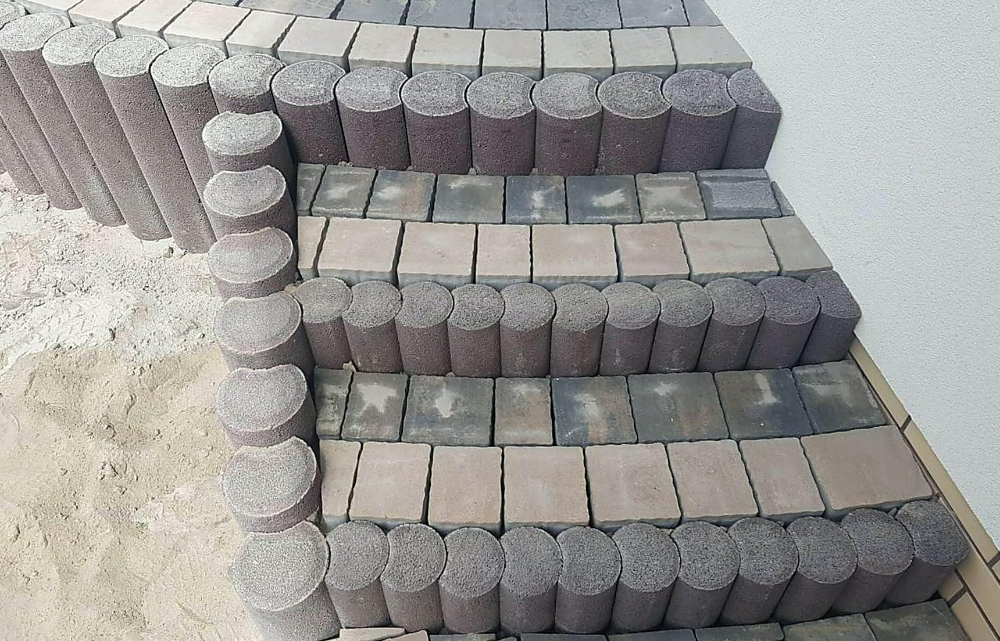
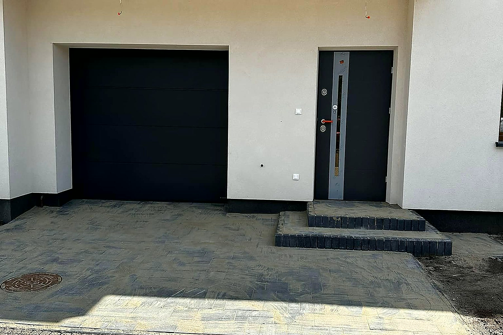

Kałuża pod bramą i mokra ściana garażu to znak, że woda nie ma dokąd spływać.
Najdroższe błędy przy nawierzchniach biorą się z wody. Źle poprowadzony spadek wpycha deszczówkę pod garaż, brak drenażu przy fundamencie kończy się wilgocią w ścianie, a rura spustowa wypuszczona wprost na kostkę wypłukuje podsypkę i robi zapadlisko.
Odwodnienie planujemy razem z nawierzchnią, a nie po fakcie — spadki, korytka liniowe, studzienki i odprowadzenie deszczówki zgodne z prawem wodnym. Jeśli robimy u Ciebie podjazd albo taras, ta część i tak wchodzi w rozmowę przy pomiarze.

Korytko z rusztem przy bramie, garażu lub w najniższym punkcie placu.
Rura drenarska w obsypce wokół fundamentu, z wyprowadzeniem wody poza budynek.
Podłączenie rur spustowych do studzienek i rozsączania zamiast wylewania na teren.
Przełożenie fragmentu nawierzchni tam, gdzie stoi woda albo cofa się pod budynek.
Telefon albo zdjęcia terenu. Po krótkiej rozmowie wiesz, czy to robota dla nas i kiedy możemy być na pomiarze.
Wycena jest z pomiaru, nie z telefonu. Po oględzinach wiesz, ile płacisz i co wchodzi w cenę.
Wchodzimy w umówionym terminie i robimy swoje do końca — bez znikania na inną budowę.
Przechodzimy razem po całości. Coś Ci nie gra — poprawiamy, zanim rozliczymy robotę.
Mokra ściana w garażu albo piwnicy, kałuża, która stoi kilka dni po deszczu, zielony nalot przy fundamencie. Przy oględzinach widać to od razu.
Najczęściej do skrzynek rozsączających na własnej działce. Nie wolno kierować wody na sąsiada — planujemy tak, żeby wszystko zostało u Ciebie.
Tak. Rozbieramy pas nawierzchni, wstawiamy korytko lub rurę i układamy kostkę z powrotem. Materiał w większości wraca na miejsce.
Zadzwoń albo napisz — przyjeżdżamy, mierzymy i podajemy konkretną kwotę za całość. Za darmo i bez zobowiązań. Decyzję podejmujesz po poznaniu ceny, nie przed.